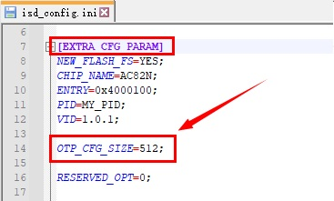
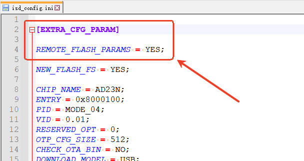

5.2. FLASH参数说明
5.2.1. 介绍
FLASH参数是SDK用于使能FLASH写保护功能和多算法授权用的一组参数。
如SDK支持FLASH写保护功能和多算法授权，那么需要配置芯片FLASH ID对应的FLASH参数，才可以使能FLASH写保护功能和多算法授权。
一般情况下FLASH参数是由烧写器写入到芯片的FLASH中的。
但是您可能需要在开发调试阶段，完成以下操作：
启动FLASH写保护参数功能
重新激活多算法授权功能（如：烧写器烧录多算法授权数据后，多算法授权功能失效）
可以通过isd_download.exe的参数-flash-params指定FLASH参数文件。
常用的FLASH参数都已存放的FLASH参数文件中， FLASH参数文件可以通过以下链接获取：
V0_V1版本FLASH参数文件(点击此处下载)
V3版本FLASH参数文件(点击此处下载)
如您发现由未支持的FLASH ID型号，请联系杰理工程师。
5.2.2. FLASH参数版本说明
默认情况下，各个芯片型号SDK适用的FLASH参数版本如下：
FLASH参数版本 |
适用芯片型号的SDK |
|---|---|
V0 |
AC695X、AC635N、AC6083、AE695N |
V1 |
JL703N |
V3 |
AC707N、AW34N |
5.2.3. 如何在SDK中设置FLASH参数文件
下载FLASH参数文件后，找到SDK中的download.bat文件， 在isd_download.exe后添加-flash-params参数，如下图：
Important
如果您的download.bat文件是由download.c或者download_bat.c文件生成，
那么请在download.c或者download_bat.c中添加-flash-params参数

5.2.4. V0版本芯片型号启用FLASH写保护功能
V0版本仅需要在isd_config.ini中增加以下配置
Note
[BURNER_PASSTHROUGH_CFG]
FLASH_WRITE_PROTECT=YES如下图:

Important
使用V0版本FLASH参数使能FLASH写保护功能的SDK，不需要配置OTP_CFG_SIZE。
5.2.5. V1/V3版本芯片型号启用FLASH写保护功能
需要在isd_config.ini中增加以下配置
Note
[BURNER_PASSTHROUGH_CFG]
FLASH_WRITE_PROTECT=YES如下图:
在isd_config.ini的
EXTRA_CFG_PARAM配置段中增加OTP_CFG_SIZE=512配置Note
[EXTRA_CFG_PARAM]
OTP_CFG_SIZE=512如下图:

5.2.6. 启用远程FLASH参数功能
如果需要SDK自动从服务器下载FLASH参数文件，并自动添加到SDK中，
可以在isd_config.ini的EXTRA_CFG_PARAM配置段中增加REMOTE_FLASH_PARAMS=YES配置
Note
[EXTRA_CFG_PARAM]
REMOTE_FLASH_PARAMS=YES
如下图:

支持REMOTE_FLASH_PARAMS配置的isd_download.exe最低版本如下：
工具 |
最低版本 |
说明 |
|---|---|---|
isd_download.exe |
4.2.76 |